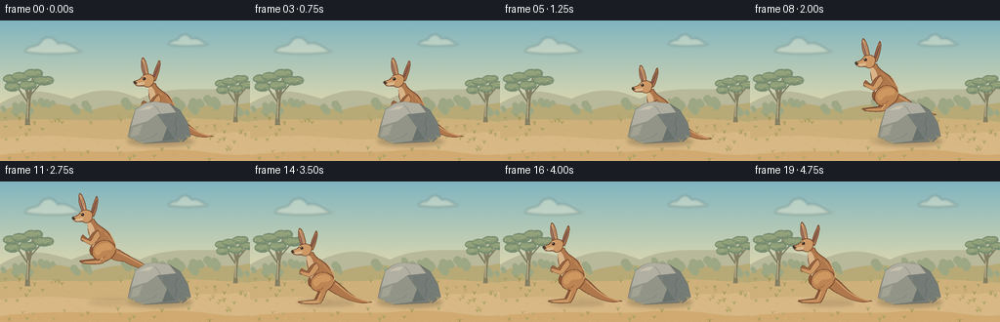
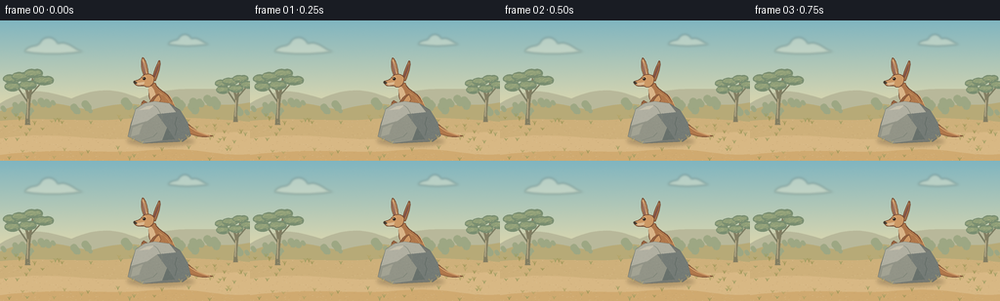

CODING AGENTS AS PIXEL WORLD MODELS
traex/GPT-6.1-Sol · dynamic_spatial_relationship_0035
点击播放 · 原生 RGB 像素
逐轮保存的候选
回放视频、检查图与代码变化。
每份候选均可单独播放。实际图片检查记录在下方工具轨迹中。
候选 01播放与检查图
点击播放 · 原生 RGB 像素


展开代码变化
--- 上一保存版本
+++ 本次保存版本
@@ -0,0 +1,208 @@
+from pathlib import Path
+import math
+import json
+import numpy as np
+from PIL import Image, ImageDraw, ImageFilter
+import artifact_io
+
+ROOT = Path(__file__).resolve().parent
+SPEC = json.loads((ROOT / 'task_spec.json').read_text())
+W,H = SPEC['width'],SPEC['height']
+S = 4
+rng = np.random.default_rng(27)
+
+def bezier_path(seq):
+ pts=[]; cur=None
+ for item in seq:
+ if item[0]=='M':
+ cur=np.array(item[1:],float); pts.append(tuple(cur))
+ elif item[0]=='L':
+ cur=np.array(item[1:],float); pts.append(tuple(cur))
+ elif item[0]=='C':
+ a=cur.copy(); b=np.array(item[1:3]); c=np.array(item[3:5]); e=np.array(item[5:7])
+ for t in np.linspace(0,1,18)[1:]:
+ pts.append(tuple((1-t)**3*a+3*(1-t)**2*t*b+3*(1-t)*t*t*c+t**3*e))
+ cur=e
+ return pts
+
+class Art:
+ def __init__(self,im,transform=None):
+ self.im=im; self.d=ImageDraw.Draw(im); self.transform=transform or (lambda x,y:(x,y))
+ def points(self,points):
+ return [tuple(v*S for v in self.transform(x,y)) for x,y in points]
+ def poly(self,p,fill,outline=None,width=.5):
+ q=self.points(p); self.d.polygon(q,fill=fill)
+ if outline: self.d.line(q+[q[0]],fill=outline,width=max(1,round(width*S)),joint='curve')
+ def path(self,p,fill,outline=None,width=.5): self.poly(bezier_path(p),fill,outline,width)
+ def line(self,p,fill,width=1): self.d.line(self.points(p),fill=fill,width=max(1,round(width*S)),joint='curve')
+ def curve(self,p,fill,width=1): self.line(bezier_path(p),fill,width)
+ def ellipse(self,box,fill,outline=None,width=.5):
+ x1,y1,x2,y2=box
+ self.poly([( (x1+x2)/2+(x2-x1)/2*math.cos(t),(y1+y2)/2+(y2-y1)/2*math.sin(t)) for t in np.linspace(0,math.tau,60)],fill,outline,width)
+
+# A softly textured, sunlit Australian open woodland.
+yy,xx=np.mgrid[:H*S,:W*S]
+y=yy/S; x=xx/S
+sky_top=np.array([128,181,192]); sky_low=np.array([235,221,172])
+blend=np.clip(y/102,0,1)[...,None]
+a=sky_top*(1-blend)+sky_low*blend
+noise=rng.normal(0,.48,(H*S,W*S,1)); a=np.clip(a+noise,0,255).astype(np.uint8)
+BG=Image.fromarray(a,'RGB'); d=Art(BG)
+# Distant soft clouds, lit haze.
+cloud=Image.new('RGBA',BG.size); c=Art(cloud)
+for cx,cy,sc in [(55,27,1),(193,21,.7)]:
+ c.path([('M',cx-30*sc,cy+5*sc),('C',cx-25*sc,cy-3*sc,cx-17*sc,cy+1*sc,cx-14*sc,cy-4*sc),('C',cx-10*sc,cy-12*sc,cx+1*sc,cy-11*sc,cx+4*sc,cy-3*sc),('C',cx+15*sc,cy-7*sc,cx+20*sc,cy+3*sc,cx+30*sc,cy+5*sc),('C',cx+9*sc,cy+8*sc,cx-13*sc,cy+8*sc,cx-30*sc,cy+5*sc)],(255,246,218,84))
+BG=Image.alpha_composite(BG.convert('RGBA'),cloud.filter(ImageFilter.GaussianBlur(S*1.2))).convert('RGB'); d=Art(BG)
+d.path([('M',0,85),('C',30,68,42,71,73,80),('C',104,67,121,71,143,80),('C',181,63,217,75,256,68),('L',256,110),('L',0,110)],'#b8b89a')
+d.path([('M',0,93),('C',41,76,66,88,93,92),('C',120,84,141,83,173,93),('C',201,82,231,90,256,84),('L',256,118),('L',0,118)],'#b7aa77')
+# Tiny distant scrub silhouettes.
+for _ in range(38):
+ tx=rng.uniform(0,256); ty=rng.uniform(85,98); z=rng.uniform(.9,2.5)
+ d.line([(tx,ty),(tx,ty-3.4*z)],'#929d7d',.6)
+ for j in range(3): d.ellipse((tx-2*z+j*z*.7,ty-5*z+j*z*.8,tx+1.7*z+j*z*.6,ty-1.3*z+j*z*.8),'#9da783')
+# Warm sand, broad natural ground bands.
+d.path([('M',0,103),('C',51,99,75,104,112,102),('C',153,99,203,99,256,104),('L',256,144),('L',0,144)],'#ceb07a')
+d.path([('M',0,121),('C',68,112,94,127,155,120),('C',204,113,233,117,256,113),('L',256,144),('L',0,144)],'#d8b884')
+d.path([('M',0,138),('C',62,130,109,137,142,134),('C',207,128,221,141,256,137),('L',256,144),('L',0,144)],'#d0aa70')
+# Eucalypts frame the action without covering it.
+def tree(tx,ty,scale):
+ tt=Art(BG,lambda x,y:(tx+x*scale,ty+y*scale))
+ tt.path([('M',-3,0),('C',-2,-15,1,-24,-1,-39),('L',-6,-56),('L',-3,-55),('L',2,-41),('L',6,-60),('L',8,-61),('L',5,-37),('C',3,-20,2,-10,4,0)],'#837e62')
+ tt.line([(-.3,-30),(-13,-49),(-23,-57)],'#7c7d62',1.8)
+ tt.line([(3,-37),(16,-52),(23,-54)],'#7c7d62',1.5)
+ tt.line([(0,-8),(1,-33)],'#beb08a',.9)
+ for px,py,sz in [(-21,-58,10),(-9,-61,11),(7,-65,11),(20,-56,12),(0,-50,10),(-20,-48,9)]:
+ tt.path([('M',px-sz,py+1),('C',px-sz-2,py-5,px-3,py-8,px+2,py-6),('C',px+sz,py-9,px+sz+5,py-1,px+sz,py+3),('C',px+4,py+7,px-6,py+6,px-sz,py+1)],'#788d70')
+ tt.path([('M',px-sz+1,py),('C',px-sz,py-4,px-2,py-6,px+3,py-4),('C',px+sz,py-6,px+sz,py-1,px+sz-2,py),('C',px+1,py+2,px-5,py+2,px-sz+1,py)],'#8f9f78')
+ for _ in range(20):
+ ex=px+rng.uniform(-sz,sz); ey=py+rng.uniform(-4,3)
+ tt.line([(ex,ey),(ex+2,ey-.7)],'#abb185',.45)
+tree(28,107,.80); tree(241,104,.67)
+# Ground grain and wind-stilled grass tufts; keep the main silhouettes clean.
+for _ in range(900):
+ px=rng.uniform(0,256); py=rng.uniform(102,144)
+ co=['#d9bf90','#c2a172','#d5b580','#e1c69a','#b99c6a'][rng.integers(5)]
+ d.line([(px,py),(px+rng.uniform(.25,1.25),py+rng.uniform(-.15,.15))],co,.22)
+for _ in range(92):
+ px=rng.uniform(0,256); py=rng.uniform(98,144)
+ if 53<px<200 and 108<py<132: continue
+ tall=rng.uniform(1.6,4.5); color=['#9f9e62','#a19859','#b4a466'][rng.integers(3)]
+ for dx in [-1,0,1]: d.curve([('M',px,py),('C',px+dx*.5,py-tall*.5,px+dx*1.2,py-tall*.8,px+dx*1.8,py-tall)],color,.45)
+
+# Static rock: irregular granite outline, bevels, mottled mineral texture.
+rock=Image.new('RGBA',BG.size); r=Art(rock)
+rockoutline=[(131,119),(134,106),(139,91),(148,85),(158,83),(173,85),(184,92),(192,105),(195,118),(187,124),(146,126)]
+r.poly(rockoutline,'#777a73','#666b64',.7)
+r.poly([(139,91),(148,85),(158,83),(173,85),(180,94),(161,96),(151,103),(134,108)],'#b0afa1')
+r.poly([(134,108),(151,103),(161,96),(171,110),(166,123),(146,126),(131,119)],'#929487')
+r.poly([(161,96),(180,94),(184,92),(192,105),(195,118),(179,122),(171,110)],'#747b76')
+r.poly([(171,110),(179,122),(166,123)],'#68716c')
+r.poly([(142,92),(150,88),(158,87),(153,91)],'#c8c2af')
+r.poly([(136,110),(146,106),(142,117),(134,119)],'#a3a393')
+r.curve([('M',157,87),('C',162,89,163,94,166,98),('L',165,103)],'#828779',.55)
+r.curve([('M',181,99),('L',179,106),('L',181,111),('L',179,118)],'#626c66',.65)
+r.line([(145,123),(157,119),(161,115)],'#777f72',.5)
+# Clip mineral flecks to the rock, avoiding any noisy silhouette.
+mask=Image.new('L',BG.size); md=Art(mask); md.poly(rockoutline,255)
+texture=Image.new('RGBA',BG.size); td=Art(texture)
+for _ in range(1000):
+ px=rng.uniform(132,195); py=rng.uniform(84,125)
+ co=(207,205,179,int(rng.integers(9,36))) if rng.random()<.6 else (40,50,44,int(rng.integers(7,28)))
+ td.ellipse((px,py,px+rng.uniform(.15,.65),py+rng.uniform(.12,.4)),co)
+texture.putalpha(Image.fromarray((np.asarray(texture.getchannel('A'),dtype=np.float32)*(np.asarray(mask)/255)).astype(np.uint8)))
+rock=Image.alpha_composite(rock,texture)
+
+# The kangaroo is built in local coordinates, facing left. Feet at y=0.
+# Its tail counterbalances its haunches; hind legs tuck in the airborne pose.
+fur_lines=[]
+for _ in range(48):
+ fx=rng.uniform(-9,8); fy=rng.uniform(-41,-22)
+ if ((fx+1)/12)**2+((fy+31)/17)**2 < .85:
+ fur_lines.append((fx,fy,rng.uniform(.7,1.7)))
+
+def kangaroo(im,cx,base,tuck=0,squash=0,lean=0,breath=0):
+ def trans(x,y):
+ yy=y*(1-squash*.1)+breath*max(0,-y/80)
+ return cx+x+lean*(-y/70),base+yy
+ k=Art(im,trans)
+ outline='#71452d'; brown='#af774b'; light='#cd9864'; dark='#8e5939'
+ # Long tapered tail behind the near thigh, with a very fine tip.
+ k.path([('M',4,-28),('C',18,-22,22,-11-tuck*8,34,-5-tuck*8),('C',40,-2-tuck*7,45,-1-tuck*5,49,-.4-tuck*4),('C',38,2-tuck*5,28,-1-tuck*6,18,-6-tuck*7),('C',8,-11,2,-16,0,-20)],brown,outline,.7)
+ k.curve([('M',12,-21),('C',25,-9-tuck*8,32,-4-tuck*8,46,-.5-tuck*4)],'#cf9c69',1.2)
+ # Far leg, darker and a little behind.
+ k.path([('M',-2,-29),('C',-13,-31,-18,-25,-15,-19),('C',-12,-15,-7,-14,-6,-11-tuck*8),('L',-10,-3-tuck*14),('L',-26,-1-tuck*14),('C',-30,1-tuck*14,-15,2-tuck*14,-7,1-tuck*14),('L',0,-11-tuck*7),('L',7,-24)],dark,outline,.65)
+ # Torso and rising neck.
+ k.path([('M',8,-19),('C',14,-28,8,-36,2,-43),('C',-4,-48,-8,-49,-10,-55),('L',-18,-54),('C',-15,-48,-18,-44,-15,-37),('C',-14,-29,-12,-20,-5,-16),('C',0,-13,5,-15,8,-19)],brown,outline,.7)
+ # Sunlit front chest / soft cream throat.
+ k.path([('M',-17,-53),('C',-12,-51,-11,-47,-10,-44),('C',-9,-38,-12,-31,-8,-25),('C',-6,-23,-6,-18,-3,-17),('C',-10,-18,-13,-23,-14,-32),('C',-15,-40,-17,-45,-17,-53)],'#d9b488')
+ k.path([('M',-7,-46),('C',-1,-43,5,-36,7,-30),('C',5,-37,1,-42,-4,-43)],'#c5915d')
+ # The near hind leg has an oversized muscular thigh and slender long foot.
+ k.path([('M',6,-31),('C',-1,-36,-12,-30,-13,-23),('C',-15,-16,-10,-12,-4,-12),('L',-8,-3-tuck*13),('C',-13,-2-tuck*13,-22,-2-tuck*13,-25,-.3-tuck*13),('C',-26,1.6-tuck*13,-10,2.2-tuck*13,-4,1-tuck*13),('C',-1,-2-tuck*12,1,-8-tuck*5,3,-13),('C',12,-18,13,-27,6,-31)],'#bd8553',outline,.7)
+ k.path([('M',3,-30),('C',-3,-31,-10,-27,-11,-22),('C',-10,-16,-7,-17,-5,-20),('C',-2,-24,3,-22,7,-24),('C',8,-28,6,-30,3,-30)],'#cf9860')
+ k.curve([('M',-7,-14),('C',-4,-13,-2,-15,0,-17)],'#996039',.65)
+ k.curve([('M',-22,-.3-tuck*13),('L',-7,-.5-tuck*13),('L',-3,-10-tuck*6)],'#dfb37e',.8)
+ k.line([(-24,1-tuck*13),(-21,1.2-tuck*13)],'#594536',.65)
+ # Small bent forearms; near arm and wrist hang in front of the chest.
+ k.path([('M',-6,-43),('C',-12,-43,-14,-37,-17,-34),('L',-22,-37-tuck*2),('L',-24,-35-tuck*2),('C',-23,-33,-18,-29,-16,-30),('C',-11,-32,-8,-36,-6,-39)],'#9b6540',outline,.6)
+ k.path([('M',-6,-43),('C',-10,-41,-12,-36,-15,-32),('L',-23,-34-tuck*2),('C',-25,-34-tuck*2,-25,-32-tuck*2,-23,-31-tuck*2),('L',-15,-28),('C',-11,-28,-7,-33,-4,-38)],light,outline,.6)
+ k.line([(-23,-32-tuck*2),(-25,-31-tuck*2)],'#544235',.5)
+ k.line([(-22,-31-tuck*2),(-23.5,-29.8-tuck*2)],'#544235',.5)
+ # Ears: tall, separate, leaf-like with warm dark interiors.
+ k.path([('M',-13,-59),('C',-12,-65,-8,-75,-6,-78),('C',-3,-76,-7,-63,-10,-57)],'#ae794e',outline,.7)
+ k.path([('M',-12,-61),('C',-10,-67,-7,-74,-6,-75),('C',-6,-70,-9,-64,-10,-61)],'#805347')
+ k.path([('M',-20,-60),('C',-25,-67,-25,-78,-23,-81),('C',-19,-79,-17,-67,-17,-61)],'#c39160',outline,.7)
+ k.path([('M',-21,-63),('C',-23,-68,-24,-76,-23,-78),('C',-20,-74,-19,-67,-19,-63)],'#916455')
+ k.curve([('M',-23,-79),('C',-22,-75,-20,-68,-19,-64)],'#dfb583',.7)
+ # Small deer-like head with distinctly extended muzzle.
+ k.path([('M',-11,-60),('C',-13,-65,-20,-65,-23,-62),('C',-25,-59,-27,-58,-31,-57),('C',-33,-56,-31,-53,-28,-52),('L',-21,-52),('C',-18,-49,-13,-52,-12,-55)],light,outline,.65)
+ k.path([('M',-29,-55),('C',-25,-55,-23,-56,-21,-56),('C',-21,-52,-25,-52,-28,-53)],'#ddba91')
+ k.path([('M',-31,-57),('C',-33,-57,-33,-54,-30,-54),('L',-28.5,-55)],'#443b30')
+ k.curve([('M',-30,-52.9),('C',-26,-51.7,-24,-53,-22,-52.7)],'#79543b',.55)
+ k.ellipse((-23,-61,-19.7,-57.8),'#785039')
+ k.ellipse((-22.7,-60.6,-20.2,-58.1),'#251f1a')
+ k.ellipse((-22.2,-60.25,-21.5,-59.55),'#fff0c7')
+ k.curve([('M',-23.5,-61.4),('C',-22.1,-62,-20.6,-62,-19.3,-61)],'#e5ba82',.55)
+ for fx,fy,ll in fur_lines:
+ k.line([(fx,fy),(fx+.35,fy+ll)],'#c68f5d',.26)
+ k.curve([('M',4,-43),('C',8,-35,13,-28,10,-23)],'#ddaa72',.7)
+
+frames=[]
+for i in range(SPEC['frames']):
+ im=BG.copy()
+ if i<5:
+ cx=169; base=119; tuck=0; squash=0; lean=0; breath=.45*math.sin(i*.8)
+ elif i==5:
+ cx=168; base=122; tuck=.15; squash=.6; lean=-1; breath=0
+ elif i==6:
+ cx=164; base=120; tuck=.28; squash=.45; lean=-3; breath=0
+ elif i<=13:
+ u=(i-6)/8
+ cx=164-88*u; base=120-29*math.sin(math.pi*u)
+ tuck=.85*math.sin(math.pi*u); squash=0; lean=-4*math.sin(math.pi*u); breath=0
+ elif i==14:
+ cx=76; base=124; tuck=0; squash=.6; lean=-2; breath=0
+ else:
+ cx=76; base=123; tuck=0; squash=max(0,.24*(16-i)); lean=0; breath=.35*math.sin((i-15)*1.1)
+ # Soft elliptical shadows anchor the separate objects and rise/fall with the jump.
+ sh=Image.new('RGBA',im.size); sd=Art(sh)
+ altitude=max(0,120-base)
+ alpha=round(48-altitude*.8)
+ sd.ellipse((cx-24+altitude*.2,121-altitude*.04,cx+31-altitude*.2,128-altitude*.01),(85,66,41,alpha))
+ sd.ellipse((130,119,197,129),(67,60,43,65))
+ im=Image.alpha_composite(im.convert('RGBA'),sh.filter(ImageFilter.GaussianBlur(1.8*S)))
+ kangaroo(im,cx,base,tuck,squash,lean,breath)
+ # The rock is ALWAYS foreground, giving the initial behind relationship true occlusion.
+ im=Image.alpha_composite(im,rock)
+ fg=Art(im)
+ for gx,gy in [(136,124),(145,127),(185,125),(192,121)]:
+ fg.curve([('M',gx,gy),('C',gx-.3,gy-2,gx-1.5,gy-3,gx-2,gy-4)],'#a99b62',.55)
+ fg.curve([('M',gx,gy),('C',gx+.5,gy-1,gx+1,gy-2,gx+1.5,gy-3)],'#bcac6e',.5)
+ # A small puff on landing makes the contact legible without covering the animal.
+ if 14<=i<=16:
+ dust=Image.new('RGBA',im.size); du=Art(dust)
+ fade=[36,24,11][i-14]; spread=(i-14)*2
+ du.ellipse((48-spread,120-spread*.15,82+spread,127),(235,210,160,fade))
+ im=Image.alpha_composite(im,dust.filter(ImageFilter.GaussianBlur(1.3*S)))
+ frames.append(np.asarray(im.convert('RGB').resize((W,H),Image.Resampling.LANCZOS),dtype=np.uint8))
+artifact_io.save(np.stack(frames),ROOT)
+print(f'Saved {len(frames)} RGB frames, {W}x{H}, {SPEC["fps"]} fps.')
可观测工具轨迹
实际执行的命令与返回图片。
命令 1exit 0
/bin/bash -lc 'ls -la && cat prompt.txt && cat GENERATION_RULES.md && cat task_spec.json'
命令 2exit 0
/bin/bash -lc "cat artifact_io.py && python - <<'PY'
import PIL,numpy
print('PIL',PIL.__version__)
PY"命令 3exit 0
/bin/bash -lc "cat > generate.py <<'PY'
from pathlib import Path
import math
import json
import numpy as np
from PIL import Image, ImageDraw, ImageFilter
import artifact_io
ROOT = Path(__file__).resolve().parent
SPEC = json.loads((ROOT / 'task_spec.json').read_text())
W,H = SPEC['width'],SPEC['height']
S = 4
rng = np.random.default_rng(27)
def bezier_path(seq):
pts=[]; cur=None
for item in seq:
if item[0]=='M':
cur=np.array(item[1:],float); pts.append(tuple(cur))
elif item[0]=='L':
cur=np.array(item[1:],float); pts.append(tuple(cur))
elif item[0]=='C':
a=cur.copy(); b=np.array(item[1:3]); c=np.array(item[3:5]); e=np.array(item[5:7])
for t in np.linspace(0,1,18)[1:]:
pts.append(tuple((1-t)**3*a+3*(1-t)**2*t*b+3*(1-t)*t*t*c+t**3*e))
cur=e
return pts
class Art:
def __init__(self,im,transform=None):
self.im=im; self.d=ImageDraw.Draw(im); self.transform=transform or (lambda x,y:(x,y))
def points(self,points):
return [tuple(v*S for v in self.transform(x,y)) for x,y in points]
def poly(self,p,fill,outline=None,width=.5):
q=self.points(p); self.d.polygon(q,fill=fill)
if outline: self.d.line(q+[q[0]],fill=outline,width=max(1,round(width*S)),joint='curve')
def path(self,p,fill,outline=None,width=.5): self.poly(bezier_path(p),fill,outline,width)
def line(self,p,fill,width=1): self.d.line(self.points(p),fill=fill,width=max(1,round(width*S)),joint='curve')
def curve(self,p,fill,width=1): self.line(bezier_path(p),fill,width)
def ellipse(self,box,fill,outline=None,width=.5):
x1,y1,x2,y2=box
self.poly([( (x1+x2)/2+(x2-x1)/2*math.cos(t),(y1+y2)/2+(y2-y1)/2*math.sin(t)) for t in np.linspace(0,math.tau,60)],fill,outline,width)
# A softly textured, sunlit Australian open woodland.
yy,xx=np.mgrid[:H*S,:W*S]
y=yy/S; x=xx/S
sky_top=np.array([128,181,192]); sky_low=np.array([235,221,172])
blend=np.clip(y/102,0,1)[...,None]
a=sky_top*(1-blend)+sky_low*blend
noise=rng.normal(0,.48,(H*S,W*S,1)); a=np.clip(a+noise,0,255).astype(np.uint8)
BG=Image.fromarray(a,'RGB'); d=Art(BG)
# Distant soft clouds, lit haze.
cloud=Image.new('RGBA',BG.size); c=Art(cloud)
for cx,cy,sc in [(55,27,1),(193,21,.7)]:
c.path([('M',cx-30*sc,cy+5*sc),('C',cx-25*sc,cy-3*sc,cx-17*sc,cy+1*sc,cx-14*sc,cy-4*sc),('C',cx-10*sc,cy-12*sc,cx+1*sc,cy-11*sc,cx+4*sc,cy-3*sc),('C',cx+15*sc,cy-7*sc,cx+20*sc,cy+3*sc,cx+30*sc,cy+5*sc),('C',cx+9*sc,cy+8*sc,cx-13*sc,cy+8*sc,cx-30*sc,cy+5*sc)],(255,246,218,84))
BG=Image.alpha_composite(BG.convert('RGBA'),cloud.filter(ImageFilter.GaussianBlur(S*1.2))).convert('RGB'); d=Art(BG)
d.path([('M',0,85),('C',30,68,42,71,73,80),('C',104,67,121,71,143,80),('C',181,63,217,75,256,68),('L',256,110),('L',0,110)],'#b8b89a')
d.path([('M',0,93),('C',41,76,66,88,93,92),('C',120,84,141,83,173,93),('C',201,82,231,90,256,84),('L',256,118),('L',0,118)],'#b7aa77')
# Tiny distant scrub silhouettes.
for _ in range(38):
tx=rng.uniform(0,256); ty=rng.uniform(85,98); z=rng.uniform(.9,2.5)
d.line([(tx,ty),(tx,ty-3.4*z)],'#929d7d',.6)
for j in range(3): d.ellipse((tx-2*z+j*z*.7,ty-5*z+j*z*.8,tx+1.7*z+j*z*.6,ty-1.3*z+j*z*.8),'#9da783')
# Warm sand, broad natural ground bands.
d.path([('M',0,103),('C',51,99,75,104,112,102),('C',153,99,203,99,256,104),('L',256,144),('L',0,144)],'#ceb07a')
d.path([('M',0,121),('C',68,112,94,127,155,120),('C',204,113,233,117,256,113),('L',256,144),('L',0,144)],'#d8b884')
d.path([('M',0,138),('C',62,130,109,137,142,134),('C',207,128,221,141,256,137),('L',256,144),('L',0,144)],'#d0aa70')
# Eucalypts frame the action without covering it.
def tree(tx,ty,scale):
tt=Art(BG,lambda x,y:(tx+x*scale,ty+y*scale))
tt.path([('M',-3,0),('C',-2,-15,1,-24,-1,-39),('L',-6,-56),('L',-3,-55),('L',2,-41),('L',6,-60),('L',8,-61),('L',5,-37),('C',3,-20,2,-10,4,0)],'#837e62')
tt.line([(-.3,-30),(-13,-49),(-23,-57)],'#7c7d62',1.8)
tt.line([(3,-37),(16,-52),(23,-54)],'#7c7d62',1.5)
tt.line([(0,-8),(1,-33)],'#beb08a',.9)
for px,py,sz in [(-21,-58,10),(-9,-61,11),(7,-65,11),(20,-56,12),(0,-50,10),(-20,-48,9)]:
tt.path([('M',px-sz,py+1),('C',px-sz-2,py-5,px-3,py-8,px+2,py-6),('C',px+sz,py-9,px+sz+5,py-1,px+sz,py+3),('C',px+4,py+7,px-6,py+6,px-sz,py+1)],'#788d70')
tt.path([('M',px-sz+1,py),('C',px-sz,py-4,px-2,py-6,px+3,py-4),('C',px+sz,py-6,px+sz,py-1,px+sz-2,py),('C',px+1,py+2,px-5,py+2,px-sz+1,py)],'#8f9f78')
for _ in range(20):
ex=px+rng.uniform(-sz,sz); ey=py+rng.uniform(-4,3)
tt.line([(ex,ey),(ex+2,ey-.7)],'#abb185',.45)
tree(28,107,.80); tree(241,104,.67)
# Ground grain and wind-stilled grass tufts; keep the main silhouettes clean.
for _ in range(900):
px=rng.uniform(0,256); py=rng.uniform(102,144)
co=['#d9bf90','#c2a172','#d5b580','#e1c69a','#b99c6a'][rng.integers(5)]
d.line([(px,py),(px+rng.uniform(.25,1.25),py+rng.uniform(-.15,.15))],co,.22)
for _ in range(92):
px=rng.uniform(0,256); py=rng.uniform(98,144)
if 53<px<200 and 108<py<132: continue
tall=rng.uniform(1.6,4.5); color=['#9f9e62','#a19859','#b4a466'][rng.integers(3)]
for dx in [-1,0,1]: d.curve([('M',px,py),('C',px+dx*.5,py-tall*.5,px+dx*1.2,py-tall*.8,px+dx*1.8,py-tall)],color,.45)
# Static rock: irregular granite outline, bevels, mottled mineral texture.
rock=Image.new('RGBA',BG.size); r=Art(rock)
rockoutline=[(131,119),(134,106),(139,91),(148,85),(158,83),(173,85),(184,92),(192,105),(195,118),(187,124),(146,126)]
r.poly(rockoutline,'#777a73','#666b64',.7)
r.poly([(139,91),(148,85),(158,83),(173,85),(180,94),(161,96),(151,103),(134,108)],'#b0afa1')
r.poly([(134,108),(151,103),(161,96),(171,110),(166,123),(146,126),(131,119)],'#929487')
r.poly([(161,96),(180,94),(184,92),(192,105),(195,118),(179,122),(171,110)],'#747b76')
r.poly([(171,110),(179,122),(166,123)],'#68716c')
r.poly([(142,92),(150,88),(158,87),(153,91)],'#c8c2af')
r.poly([(136,110),(146,106),(142,117),(134,119)],'#a3a393')
r.curve([('M',157,87),('C',162,89,163,94,166,98),('L',165,103)],'#828779',.55)
r.curve([('M',181,99),('L',179,106),('L',181,111),('L',179,118)],'#626c66',.65)
r.line([(145,123),(157,119),(161,115)],'#777f72',.5)
# Clip mineral flecks to the rock, avoiding any noisy silhouette.
mask=Image.new('L',BG.size); md=Art(mask); md.poly(rockoutline,255)
texture=Image.new('RGBA',BG.size); td=Art(texture)
for _ in range(1000):
px=rng.uniform(132,195); py=rng.uniform(84,125)
co=(207,205,179,int(rng.integers(9,36))) if rng.random()<.6 else (40,50,44,int(rng.integers(7,28)))
td.ellipse((px,py,px+rng.uniform(.15,.65),py+rng.uniform(.12,.4)),co)
texture.putalpha(Image.fromarray((np.asarray(texture.getchannel('A'),dtype=np.float32)*(np.asarray(mask)/255)).astype(np.uint8)))
rock=Image.alpha_composite(rock,texture)
# The kangaroo is built in local coordinates, facing left. Feet at y=0.
# Its tail counterbalances its haunches; hind legs tuck in the airborne pose.
fur_lines=[]
for _ in range(48):
fx=rng.uniform(-9,8); fy=rng.uniform(-41,-22)
if ((fx+1)/12)**2+((fy+31)/17)**2 < .85:
fur_lines.append((fx,fy,rng.uniform(.7,1.7)))
def kangaroo(im,cx,base,tuck=0,squash=0,lean=0,breath=0):
def trans(x,y):
yy=y*(1-squash*.1)+breath*max(0,-y/80)
return cx+x+lean*(-y/70),base+yy
k=Art(im,trans)
outline='#71452d'; brown='#af774b'; light='#cd9864'; dark='#8e5939'
# Long tapered tail behind the near thigh, with a very fine tip.
k.path([('M',4,-28),('C',18,-22,22,-11-tuck*8,34,-5-tuck*8),('C',40,-2-tuck*7,45,-1-tuck*5,49,-.4-tuck*4),('C',38,2-tuck*5,28,-1-tuck*6,18,-6-tuck*7),('C',8,-11,2,-16,0,-20)],brown,outline,.7)
k.curve([('M',12,-21),('C',25,-9-tuck*8,32,-4-tuck*8,46,-.5-tuck*4)],'#cf9c69',1.2)
# Far leg, darker and a little behind.
k.path([('M',-2,-29),('C',-13,-31,-18,-25,-15,-19),('C',-12,-15,-7,-14,-6,-11-tuck*8),('L',-10,-3-tuck*14),('L',-26,-1-tuck*14),('C',-30,1-tuck*14,-15,2-tuck*14,-7,1-tuck*14),('L',0,-11-tuck*7),('L',7,-24)],dark,outline,.65)
# Torso and rising neck.
k.path([('M',8,-19),('C',14,-28,8,-36,2,-43),('C',-4,-48,-8,-49,-10,-55),('L',-18,-54),('C',-15,-48,-18,-44,-15,-37),('C',-14,-29,-12,-20,-5,-16),('C',0,-13,5,-15,8,-19)],brown,outline,.7)
# Sunlit front chest / soft cream throat.
k.path([('M',-17,-53),('C',-12,-51,-11,-47,-10,-44),('C',-9,-38,-12,-31,-8,-25),('C',-6,-23,-6,-18,-3,-17),('C',-10,-18,-13,-23,-14,-32),('C',-15,-40,-17,-45,-17,-53)],'#d9b488')
k.path([('M',-7,-46),('C',-1,-43,5,-36,7,-30),('C',5,-37,1,-42,-4,-43)],'#c5915d')
# The near hind leg has an oversized muscular thigh and slender long foot.
k.path([('M',6,-31),('C',-1,-36,-12,-30,-13,-23),('C',-15,-16,-10,-12,-4,-12),('L',-8,-3-tuck*13),('C',-13,-2-tuck*13,-22,-2-tuck*13,-25,-.3-tuck*13),('C',-26,1.6-tuck*13,-10,2.2-tuck*13,-4,1-tuck*13),('C',-1,-2-tuck*12,1,-8-tuck*5,3,-13),('C',12,-18,13,-27,6,-31)],'#bd8553',outline,.7)
k.path([('M',3,-30),('C',-3,-31,-10,-27,-11,-22),('C',-10,-16,-7,-17,-5,-20),('C',-2,-24,3,-22,7,-24),('C',8,-28,6,-30,3,-30)],'#cf9860')
k.curve([('M',-7,-14),('C',-4,-13,-2,-15,0,-17)],'#996039',.65)
k.curve([('M',-22,-.3-tuck*13),('L',-7,-.5-tuck*13),('L',-3,-10-tuck*6)],'#dfb37e',.8)
k.line([(-24,1-tuck*13),(-21,1.2-tuck*13)],'#594536',.65)
# Small bent forearms; near arm and wrist hang in front of the chest.
k.path([('M',-6,-43),('C',-12,-43,-14,-37,-17,-34),('L',-22,-37-tuck*2),('L',-24,-35-tuck*2),('C',-23,-33,-18,-29,-16,-30),('C',-11,-32,-8,-36,-6,-39)],'#9b6540',outline,.6)
k.path([('M',-6,-43),('C',-10,-41,-12,-36,-15,-32),('L',-23,-34-tuck*2),('C',-25,-34-tuck*2,-25,-32-tuck*2,-23,-31-tuck*2),('L',-15,-28),('C',-11,-28,-7,-33,-4,-38)],light,outline,.6)
k.line([(-23,-32-tuck*2),(-25,-31-tuck*2)],'#544235',.5)
k.line([(-22,-31-tuck*2),(-23.5,-29.8-tuck*2)],'#544235',.5)
# Ears: tall, separate, leaf-like with warm dark interiors.
k.path([('M',-13,-59),('C',-12,-65,-8,-75,-6,-78),('C',-3,-76,-7,-63,-10,-57)],'#ae794e',outline,.7)
k.path([('M',-12,-61),('C',-10,-67,-7,-74,-6,-75),('C',-6,-70,-9,-64,-10,-61)],'#805347')
k.path([('M',-20,-60),('C',-25,-67,-25,-78,-23,-81),('C',-19,-79,-17,-67,-17,-61)],'#c39160',outline,.7)
k.path([('M',-21,-63),('C',-23,-68,-24,-76,-23,-78),('C',-20,-74,-19,-67,-19,-63)],'#916455')
k.curve([('M',-23,-79),('C',-22,-75,-20,-68,-19,-64)],'#dfb583',.7)
# Small deer-like head with distinctly extended muzzle.
k.path([('M',-11,-60),('C',-13,-65,-20,-65,-23,-62),('C',-25,-59,-27,-58,-31,-57),('C',-33,-56,-31,-53,-28,-52),('L',-21,-52),('C',-18,-49,-13,-52,-12,-55)],light,outline,.65)
k.path([('M',-29,-55),('C',-25,-55,-23,-56,-21,-56),('C',-21,-52,-25,-52,-28,-53)],'#ddba91')
k.path([('M',-31,-57),('C',-33,-57,-33,-54,-30,-54),('L',-28.5,-55)],'#443b30')
k.curve([('M',-30,-52.9),('C',-26,-51.7,-24,-53,-22,-52.7)],'#79543b',.55)
k.ellipse((-23,-61,-19.7,-57.8),'#785039')
k.ellipse((-22.7,-60.6,-20.2,-58.1),'#251f1a')
k.ellipse((-22.2,-60.25,-21.5,-59.55),'#fff0c7')
k.curve([('M',-23.5,-61.4),('C',-22.1,-62,-20.6,-62,-19.3,-61)],'#e5ba82',.55)
for fx,fy,ll in fur_lines:
k.line([(fx,fy),(fx+.35,fy+ll)],'#c68f5d',.26)
k.curve([('M',4,-43),('C',8,-35,13,-28,10,-23)],'#ddaa72',.7)
frames=[]
for i in range(SPEC['frames']):
im=BG.copy()
if i<5:
cx=169; base=119; tuck=0; squash=0; lean=0; breath=.45*math.sin(i*.8)
elif i==5:
cx=168; base=122; tuck=.15; squash=.6; lean=-1; breath=0
elif i==6:
cx=164; base=120; tuck=.28; squash=.45; lean=-3; breath=0
elif i<=13:
u=(i-6)/8
cx=164-88*u; base=120-29*math.sin(math.pi*u)
tuck=.85*math.sin(math.pi*u); squash=0; lean=-4*math.sin(math.pi*u); breath=0
elif i==14:
cx=76; base=124; tuck=0; squash=.6; lean=-2; breath=0
else:
cx=76; base=123; tuck=0; squash=max(0,.24*(16-i)); lean=0; breath=.35*math.sin((i-15)*1.1)
# Soft elliptical shadows anchor the separate objects and rise/fall with the jump.
sh=Image.new('RGBA',im.size); sd=Art(sh)
altitude=max(0,120-base)
alpha=round(48-altitude*.8)
sd.ellipse((cx-24+altitude*.2,121-altitude*.04,cx+31-altitude*.2,128-altitude*.01),(85,66,41,alpha))
sd.ellipse((130,119,197,129),(67,60,43,65))
im=Image.alpha_composite(im.convert('RGBA'),sh.filter(ImageFilter.GaussianBlur(1.8*S)))
kangaroo(im,cx,base,tuck,squash,lean,breath)
# The rock is ALWAYS foreground, giving the initial behind relationship true occlusion.
im=Image.alpha_composite(im,rock)
fg=Art(im)
for gx,gy in [(136,124),(145,127),(185,125),(192,121)]:
fg.curve([('M',gx,gy),('C',gx-.3,gy-2,gx-1.5,gy-3,gx-2,gy-4)],'#a99b62',.55)
fg.curve([('M',gx,gy),('C',gx+.5,gy-1,gx+1,gy-2,gx+1.5,gy-3)],'#bcac6e',.5)
# A small puff on landing makes the contact legible without covering the animal.
if 14<=i<=16:
dust=Image.new('RGBA',im.size); du=Art(dust)
fade=[36,24,11][i-14]; spread=(i-14)*2
du.ellipse((48-spread,120-spread*.15,82+spread,127),(235,210,160,fade))
im=Image.alpha_composite(im,dust.filter(ImageFilter.GaussianBlur(1.3*S)))
frames.append(np.asarray(im.convert('RGB').resize((W,H),Image.Resampling.LANCZOS),dtype=np.uint8))
artifact_io.save(np.stack(frames),ROOT)
print(f'Saved {len(frames)} RGB frames, {W}x{H}, {SPEC[\"fps\"]} fps.')
PY
python generate.py"命令 4exit 0
/bin/bash -lc "python - <<'PY'
from pathlib import Path
import numpy as np
from PIL import Image
p=Path('.')
a=np.load('pixels.npz')['pixels']
assert a.shape==(144,256,20)
files=sorted((p/'frames').glob('*.png'))
assert len(files)==20
assert all(Image.open(f).mode=='RGB' and Image.open(f).size==(256,144) for f in files)
assert (p/'index.html').is_file() and (p/'generate.py').is_file()
print('Verified: 20 RGB frames, 256Ã144; pixels.npz and player present.')
PY"保存候选 1 份；完成命令 4 次；可验证图片返回 0 张。原始 API 响应与完整日志保留在本地。